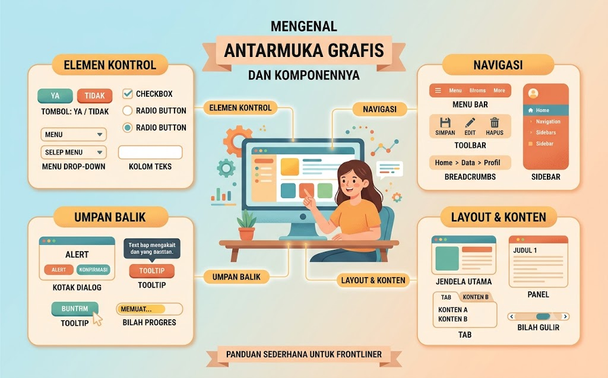

🖥️ Teknologi Informasi & Komunikasi
Jelajahi dua belas topik seru seputar TIK. Klik kartu untuk mempelajari lebih dalam.

Mengenal Antarmuka Grafis & Komponennya #1
Berkirim Surel dengan Santun & Efektif #2

Cari & Saring Informasi Pakai Peramban #3

Rapikan File & Folder biar Gampang Dicari #4

Dasar-dasar Aplikasi Perkantoran (Dokumen & Presentasi) #5

Mengulik Fitur Utama Pengolah Kata, Angka, & Slide #6

Kolaborasi Antar-aplikasi dalam Satu Paket Perkantoran #7

Baca, Ringkas, & Refleksikan Berbagai File Digital #8

Eksplorasi & Belajar Mandiri dengan Lab Maya #9

Pilih Aplikasi Tepat untuk Teks, Gambar, Grafik, Tabel & Audio #10

Buat Laporan & Presentasi Keren dengan Tools Perkantoran #11

Bikin Blog & Vlog Sederhana sebagai Portofolio Digital #12